|  |  |  |  |
 |  |  |  |  |
 |  |  |  |  |
 |  |
Bacterium Nebulus – Cyan. Image courtesy of Cmdr. Markus Mathieson
True unicellular extremophiles capable of living in the full spectrum of temperatures, chemical soups and atmospheres. They form a kaleidoscopic range of patterns and colours based on their method of metabolism. They derive energy from photosynthetic, chemosynthetic or thermosynthetic processes.
Bacteria consistently demonstrate a preference for flat or slightly undulating terrain, typically plains but also flat open areas within otherwise hilly terrain.
Bacteria are believed to be the precursors for many lifeforms and are often found in conjunction with member Species of other Genera. Links between the biochemistry of Bacterial colonies and neighbouring organisms are likely but as yet unproven.
Variant Determinant: Stellar Class / Material
Bacteria is one of the Genera with a dual variant determinant. The cross-Species rule for Stellar Class determinant holds true, i.e. Stellar Class X = Variant Colour Y across all Stellar Class determinant Species within the Genus.
For Stellar Class determinant Species in such Genera it is also possible to state generalised planetary body type and atmosphere preferences as these show a relatively limited set of values. The same is not true for the Material determinant Species. These show considerably more differentiation, to the extent that no generalisation will be made but each Material determinant Species treated individually.
Minimum Colonial Separation: 500m
| Species Name | Percentage of recorded Bacteria Population | Vista Genomics Offer Price |
|---|---|---|
| Bacterium Alcyoneum | 15.56% | 1,658,500 |
| Bacterium Aurasus | 18.42% | 1,000,000 |
| Bacterium Cerbrus | 13.47% | 1,689,800 |
All data as at 30th September 3311.
For the most up-to-date statistics and Vista Genomics pricing, please visit:
Canonn Bioforge or the data-enriched Codex Regions.
Stellar Class and Variant
| Stellar Class | O | B | A | F | G | K | M | L | T | TTS | Ae | Y | W | D | N |
| Variant | Tu | Gy | Ye | Li | Em | Gr | Te | Sg | Re | Mr | Or | Mv | Am | Oc | In |
Planetary Body Type: Icy Body, Rocky or High Metal Content
Atmosphere: Ammonia, Carbon Dioxide, Sulphur Dioxide or Water
Gravity: Less than 0.62G
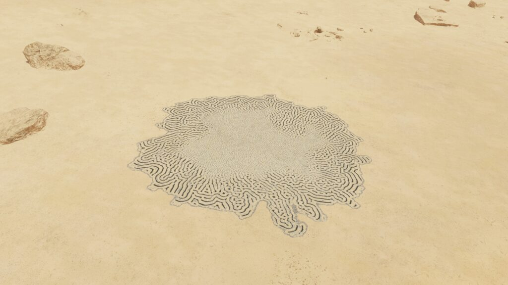
A Bacterial Species found in ammonia-based atmospheres that lives in sunlight. A colony’s appearance resembles an intricate maze.
Planetary Body Type: High Metal Content (39%) or Rocky (61%)
Atmosphere: Ammonia
Volcanism: Insignificant
Temperature Pressure Gravity
| Minimum | Average | Mode | Maximum | |
| Temperature (K) | 57.61 | 166.95 | 171.00 | 187.16 |
| Pressure (atm) | 0.000986924 | 0.002400807 | 0.001336229 | 0.047130477 |
| Gravity (G) | 0.04 | 0.19 | 0.15 | 0.38 |
Galactic Arm Preference: No Preference
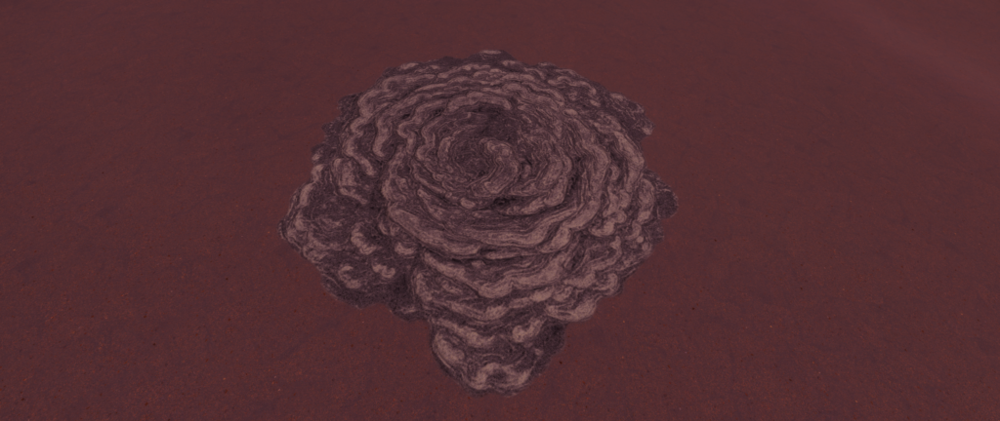
These Bacteria thrive on sunlight in Carbon Dioxide atmospheres. They cause blanket coloration across a planetary surface.
Planetary Body Type: High Metal Content (28%) Rocky (72%)
Atmosphere: Carbon Dioxide
Volcanism: Insignificant
Temperature Pressure Gravity
| Minimum | Average | Mode | Maximum | |
| Temperature (K) | 115.22 | 182.44 | 175.00 | 399.83 |
| Pressure (atm) | 0.000987629 | 0.033019133 | 0.004596203 | 0.098686236 |
| Gravity (G) | 0.04 | 0.18 | 0.1 | 0.61 |
Galactic Arm Preference: No Preference
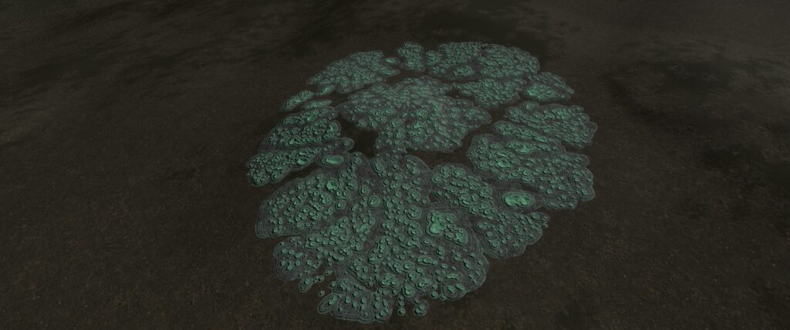
A sunlight-converting Bacterial Species on worlds with atmospheres dominated by water and sulphur dioxide. Their colonies resemble a brain-shaped mass of smaller connected cells.
Planetary Body Type: High Metal Content (74%), Rocky (25%), Rocky Ice (1%)
Atmosphere: Sulphur Dioxide (93%), Water (7%)
Volcanism: Presence of multiple Volcanic materials in low volumes. Potentially indicates tolerance rather than preference.
Temperature Pressure Gravity
| Minimum | Average | Mode | Maximum | |
| Temperature (K) | 132.00 | 244.42 | 183.00 | 499.99 |
| Pressure (atm) | 0.000986996 | 0.010506043 | 0.002835910 | 0.098691132 |
| Gravity (G) | 0.04 | 0.38 | 0.38 | 0.61 |
Galactic Arm Preference: No Preference
| Species Name | Percentage of recorded Bacteria Population | Vista Genomics Offer Price |
|---|---|---|
| Bacterium Acies | 10.99% | 1,000,000 |
| Bacterium Bullaris | 7.59% | 1,152,500 |
| Bacterium Informem | 9.17% | 8,418,000 |
| Bacterium Nebulus | 0.35% | 5,289,900 |
| Bacterium Omentum | 0.75% | 4,638,900 |
| Bacterium Scopulum | 0.50% | 4,934,500 |
| Bacterium Tela | 6.77% | 1,949,000 |
| Bacterium Verrata | 0.76% | 3,897,000 |
| Bacterium Vesicula | 14.59% | 1,000,000 |
| Bacterium Volu | 1.10% | 7,774,700 |
All data as at 30th September 3311.
For the most up-to-date statistics and Vista Genomics pricing, please visit:
Canonn Bioforge or the data-enriched Codex Regions.
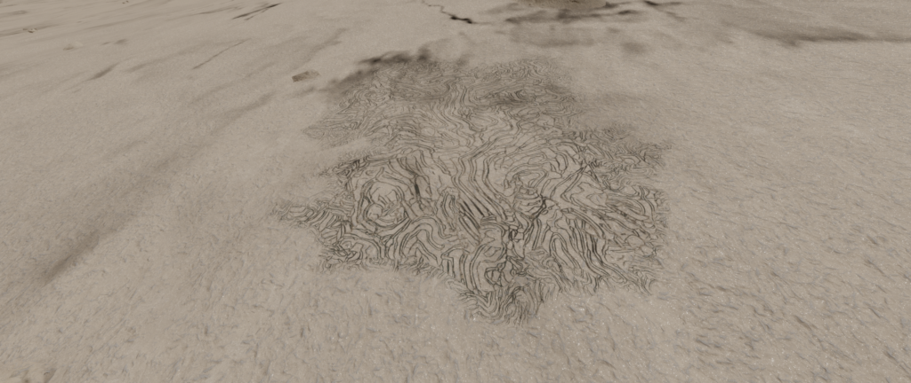
A Bacterial Species that converts energy from neon-based atmospheres, creating looping whirls of bright colour.
Material and Variant
| Material | Antimony | Polonium | Ruthenium | Technetium | Tellurium | Yttrium |
| Variant | Cyan | Magenta | Cobalt | Lime | White | Aquamarine |
Planetary Body Type: Ice (99%) or Rocky Ice (1%)
Atmosphere: Neon
Volcanism: Low numbers existing on planets across a spectrum of Volcanic activity. Potentially indicates tolerance rather than preference.
Temperature Pressure Gravity
| Minimum | Average | Mode | Maximum | |
| Temperature (K) | 20.00 | 35.98 | 20.02 | 138.48 |
| Pressure (atm) | 0.000986979 | 0.002162788 | 0.001003589 | 8.481492721 |
| Gravity (G) | 0.26 | 0.42 | 0.42 | 1.18 |
Galactic Arm Preference: No Preference
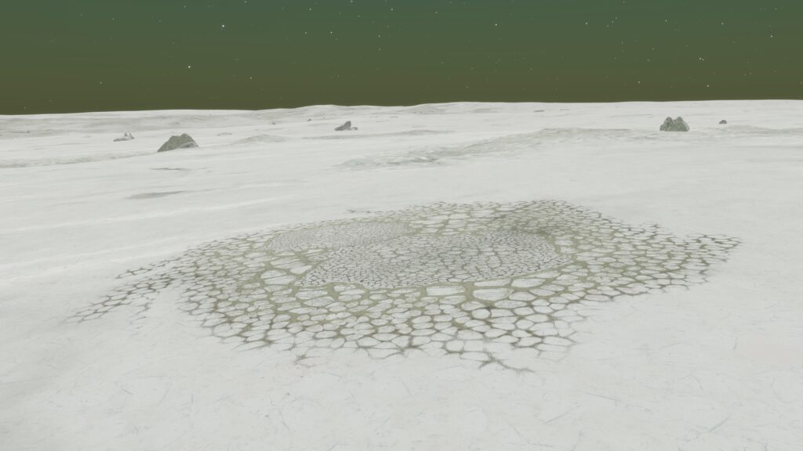
This Species of Bacteria thrives on atmospheric methane, appearing as a network of linked bubble patterns.
Material and Variant
| Material | Antimony | Polonium | Ruthenium | Technetium | Tellurium | Yttrium |
| Variant | Cobalt | Yellow | Aquamarine | Gold | Lime | Red |
Planetary Body Type: High Metal Content (1%), Ice (94%) Rocky (4%) or Rocky Ice (1%)
Atmosphere: Methane
Volcanism: Low numbers existing on planets across a spectrum of Volcanic activity. Potentially indicates tolerance rather than preference.
Temperature Pressure Gravity
| Minimum | Average | Mode | Maximum | |
| Temperature (K) | 50.49 | 95.61 | 92.00 | 140.78 |
| Pressure (atm) | 0.000987446 | 0.063661209 | 0.039472088 | 0.098691064 |
| Gravity (G) | 0.02 | 0.04 | 0.04 | 0.61 |
Galactic Arm Preference: No Preference
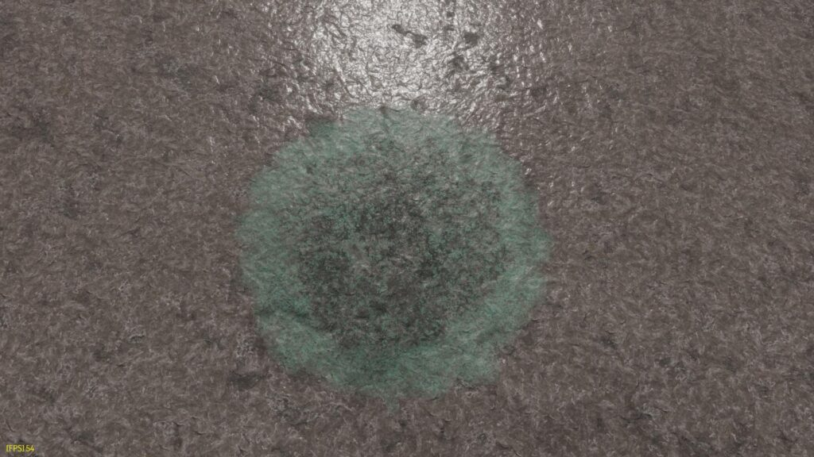
This Species of Bacteria can be found in nitrogen atmospheres and form a shapeless mass across the surface.
Material and Variant
| Material | Antimony | Polonium | Ruthenium | Technetium | Tellurium | Yttrium |
| Variant | Red | Lime | Gold | Aquamarine | Yellow | Cobalt |
Planetary Body Type: High Metal Content (16%), Ice (72%), Rocky (6%) or Rocky Ice (6%)
Atmosphere: Nitrogen
Volcanism: Insignificant
Temperature Pressure Gravity
| Minimum | Average | Mode | Maximum | |
| Temperature (K) | 42.76 | 79.83 | 75.00 | 167.28 |
| Pressure (atm) | 0.000987147 | 0.055736464 | 0.001051967 | 1492.063913151 |
| Gravity (G) | 0.04 | 0.31 | 0.27 | 0.62 |
Galactic Arm Preference: No Preference
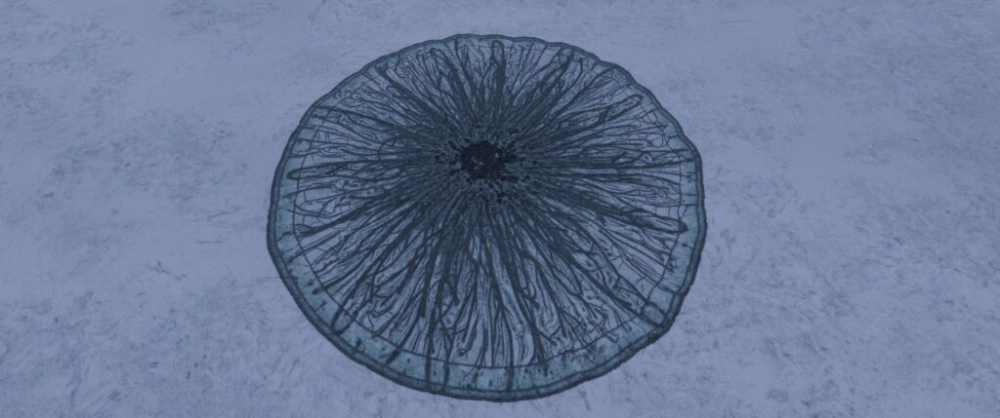
This Bacterial Species survives exclusively on atmospheric helium on Icy Bodies. They are distinguished by a radial pattern extending outward from the colony’s centre.
Material and Variant
| Material | Antimony | Polonium | Ruthenium | Technetium | Tellurium | Yttrium |
| Variant | Magenta | Gold | Orange | Cyan | Green | Cobalt |
Planetary Body Type: Ice (100%)
Atmosphere: Helium
Volcanism: Low numbers existing on planets with some Volcanic activity. Potentially indicates tolerance rather than preference.
Temperature Pressure Gravity
| Minimum | Average | Mode | Maximum | |
| Temperature (K) | 20.00 | 20.13 | 20.13 | 20.79 |
| Pressure (atm) | 0.031133345 | 0.083961700 | 0.087766546 | 0.098660936 |
| Gravity (G) | 0.39 | 0.5 | 0.5 | 0.56 |
Galactic Arm Preference: No Preference
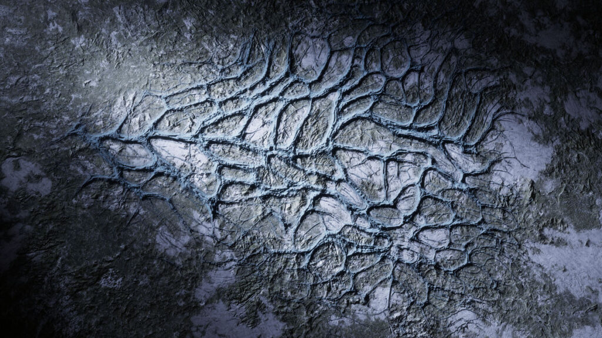
This Species of Bacteria converts geothermal heat from nitrogen- or ammonia-based volcanic sites into energy. They appear as long interlinked strands across the surface.
Material and Variant
| Material | Cadmium | Mercury | Molybdenum | Niobium | Tin | Tungsten |
| Variant | Lime | White | Aquamarine | Peach | Red | Blue |
Planetary Body Type: Ice (100%)
Atmosphere: Argon (11%), Helium (1%), Methane (9%), Neon (79%)
Volcanism: Nitrogen or Ammonia Minor Magma
Temperature Pressure Gravity
| Minimum | Average | Mode | Maximum | |
| Temperature (K) | 20.00 | 51.71 | 20.02 | 317.80 |
| Pressure (atm) | 0.000987902 | 0.013522831 | 0.002382770 | 0.098682082 |
| Gravity (G) | 0.03 | 0.35 | 0.4 | 0.6 |
Galactic Arm Preference: No Preference
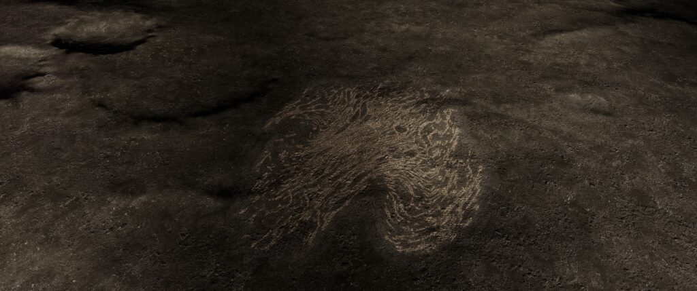
This Species of Bacteria thrives on the heat generated by carbon- or methane-based volcanic activity and appears as long swirling ridges on the surface.
Material and Variant
| Material | Cadmium | Mercury | Molybdenum | Niobium | Tin | Tungsten |
| Variant | White | Peach | Lime | Red | Mulberry | Aquamarine |
Planetary Body Type: Ice (99%), Rocky Ice (1%)
Atmosphere: Argon (8%), Helium (1%), Methane (16%), Neon (74%), Other Atmospheres (1%)
Volcanism: Carbon Dioxide Geysers or Minor Methane Magma
Temperature Pressure Gravity
| Minimum | Average | Mode | Maximum | |
| Temperature (K) | 20.00 | 49.93 | 20.02 | 284.44 |
| Pressure (atm) | 0.001007366 | 0.020438988 | 0.001007366 | 0.098627107 |
| Gravity (G) | 0.03 | 0.38 | 0.04 | 0.61 |
Galactic Arm Preference: No Preference
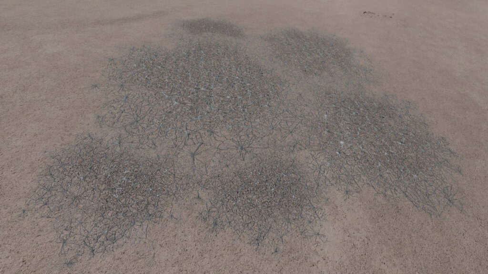
This highly atmosphere-adaptive Species of Bacteria appears as an intricate web pattern. They thrive in proximity to most magma and geyser volcanic activity, especially nitrogen-, methane- or water-based. However, Tela are also found on planetary bodies with no evident Volcanic activity.
Material and Variant
| Material | Cadmium | Mercury | Molybdenum | Niobium | Tin | Tungsten |
| Variant | Gold | Orange | Yellow | Magenta | Cobalt | Green |
Planetary Body Type: High Metal Content (48%), Icy (27%), Rocky(25%)
Atmosphere: Argon (4%), Carbon Dioxide (9%),Methane (3%), Neon (21%), Sulphur Dioxide (42%), Water (20%), Other Atmospheres (1%)
Volcanism: Minor Nitrogen and Methane magma; major and minor Water magma; major and minor Silicate and Water geysers;
Temperature Pressure Gravity
| Minimum | Average | Mode | Maximum | |
| Temperature (K) | 20.00 | 275.86 | 20.02 | 630.93 |
| Pressure (atm) | 0.000987961 | 0.028847069 | 0.002239171 | 0.098685378 |
| Gravity (G) | 0.03 | 0.37 | 0.05 | 0.61 |
Galactic Arm Preference: No Preference
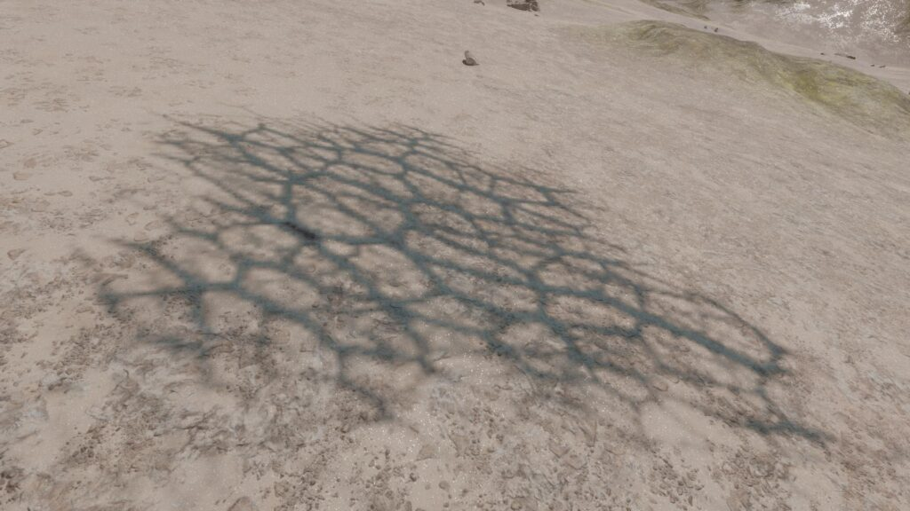
This Species of Bacteria appears as an intricate web pattern. They show a preference for exclusively water-based volcanic activity.
Material and Variant
| Material | Cadmium | Mercury | Molybdenum | Niobium | Tin | Tungsten |
| Variant | Peach | Red | White | Mulberry | Blue | Lime |
Planetary Body Type: Icy (97%), Rocky(1%) or Rocky Ice World (2%)
Atmosphere: Ammonia (1%), Argon (18%), Helium (4%), Neon (74%), Other Atmospheres (3%)
Volcanism: Water Magma and Geysers of Major and Minor strength
Temperature Pressure Gravity
| Minimum | Average | Mode | Maximum | |
| Temperature (K) | 20.00 | 277.08 | 20.02 | 630.93 |
| Pressure (atm) | 0.000987961 | 0.028693834 | 0.002239171 | 0.098685378 |
| Gravity (G) | 0.03 | 0.37 | 0.05 | 0.61 |
Galactic Arm Preference: No Preference
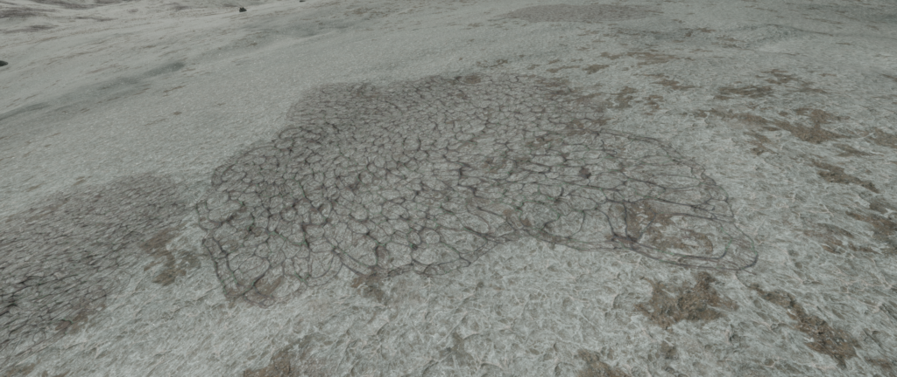
This Species of Bacteria survives on worlds with argon atmospheres and appears as a collection of tight loops on the ground.
Material and Variant
| Material | Antimony | Polonium | Ruthenium | Technetium | Tellurium | Yttrium |
| Variant | Cyan | Orange | Mulberry | Gold | Red | LIme |
Planetary Body Type: High Metal Content (1%), Icy (88%) ,Rocky Ice World (11%) or Rocky Body
Atmosphere: Argon
Volcanism: Low numbers existing on planets with some Volcanic activity. Potentially indicates tolerance rather than preference.
Temperature Pressure Gravity
| Minimum | Average | Mode | Maximum | |
| Temperature (K) | 45.18 | 76.45 | 56.00 | 266.21 |
| Pressure (atm) | 0.000986953 | 0.012574639 | 0.001931407 | 0.098606674 |
| Gravity (G) | 0.03 | 0.18 | 0.05 | 0.51 |
Galactic Arm Preference: No Preference
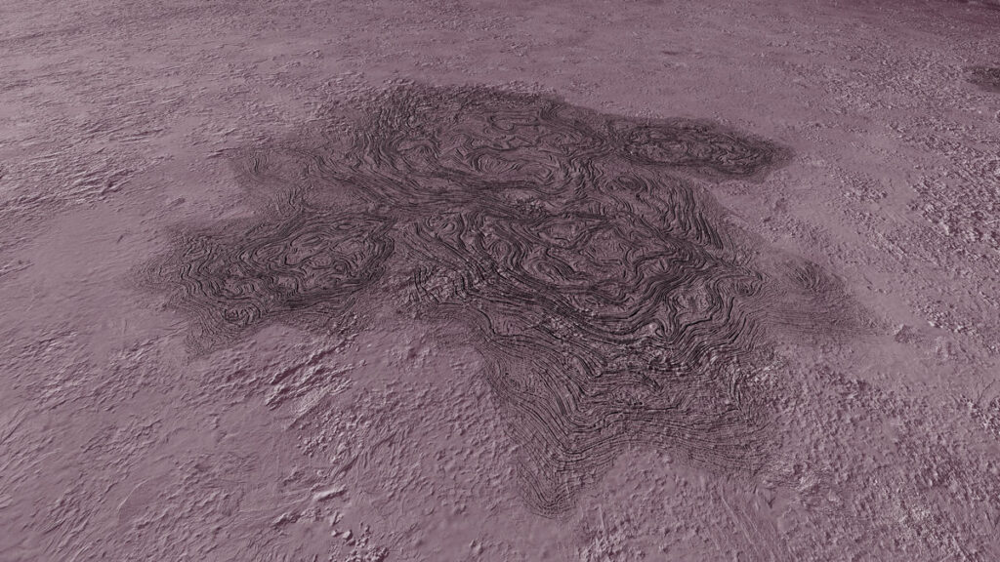
This Species of Bacteria is dependent upon oxygen atmospheres and creates random swirling patterns across the ground.
Material and Variant
| Material | Antimony | Polonium | Ruthenium | Technetium | Tellurium | Yttrium |
| Variant | Red | Aquamarine | Cobalt | Lime | Cyan | Gold |
Planetary Body Type: High Metal Content (9%), Icy (70%), Rocky (2%) or Rocky Ice World (19%)
Atmosphere: Oxygen
Volcanism: Insignificant
Temperature Pressure Gravity
| Minimum | Average | Mode | Maximum | |
| Temperature (K) | 143.80 | 182.52 | 157.98 | 245.82 |
| Pressure (atm) | 0.004755793 | 0.054622207 | 0.004755793 | 0.098579332 |
| Gravity (G) | 0.05 | 0.34 | 0.3 | 0.6 |
Galactic Arm Preference: No Preference
| | | | |
| | | | |
| | | | |
| |